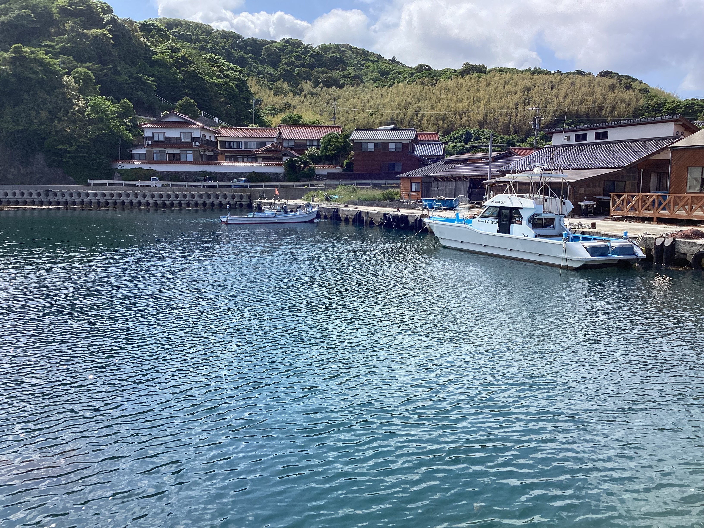

宿について
隠岐島の自然に囲まれた港町に位置する「民宿 浜」は、朝日が見える2階の部屋や、海を望む絶景が魅力の小さな民宿です。 本土からの送迎付きで、初めての方でも安心してご利用いただけます。
料金
| 部屋タイプ | 料金（税込） |
|---|---|
| 1部屋（2名まで） | 1,100円 |
| 1人部屋 | ＋1,000円 |
| 朝食・夕食付き | ※準備中 |
オプション
- クルージング体験（詳細・料金はお問い合わせください）
朝食・クルージング・アクセス
朝食は地元の食材を活かした和食を予定しています（価格は現在検討中）。
クルージングは季節によりコースが異なり、港から直接出発可能です。
アクセスは本土からフェリー＋送迎にてご案内いたします。
ご予約
以下の予約フォームからお申し込みください。
アクセスマップ
以下の地図で、港の宿の所在地をご確認いただけます。